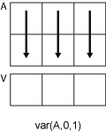
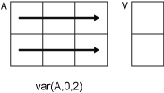

var
Variance
Syntax
Description
V = var(A)A along the first array dimension whose size
does not equal 1. By default, the variance is normalized by N-1,
where N is the number of observations.
If
Ais a vector of observations, thenVis a scalar.If
Ais a matrix whose columns are random variables and whose rows are observations, thenVis a row vector containing the variance corresponding to each column.If
Ais a multidimensional array, thenvar(A)operates along the first array dimension whose size does not equal 1, treating the elements as vectors. The size ofVin this dimension becomes1, while the sizes of all other dimensions are the same as inA.If
Ais a scalar, thenVis0.If
Ais a0-by-0empty array, thenVisNaN.If
Ais a table or timetable, thenvar(A)returns a one-row table containing the variance of each variable. (since R2023a)
V = var(A,w)w = 0 (default), the variance
is normalized by N-1, where N is the number of
observations. When w = 1, the variance is normalized by the
number of observations. w can also be a weight vector containing
nonnegative elements. In this case, the length of w must equal
the length of the dimension over which var is operating.
V = var(A,w,vecdim)vecdim when w is 0 or 1. For example, if
A is a matrix, then var(A,0,[1 2]) returns
the variance over all elements in A because every element of a
matrix is contained in the array slice defined by dimensions 1 and 2.
[
also returns the mean of the elements of V,M] = var(___)A used to calculate the
variance. If V is the weighted
variance, then M is the weighted
mean.
Examples
Input Arguments
Input array, specified as a vector, matrix, multidimensional array, table, or timetable. If
A is a scalar, then var(A) returns
0. If A is a
0-by-0 empty array, then
var(A) returns NaN.
Data Types: single | double | table | timetable
Complex Number Support: Yes
Weight, specified as one of:
0— Normalize byN-1, whereNis the number of observations. If there is only one observation, then the weight is 1.1— Normalize byN.Vector made up of nonnegative scalar weights corresponding to the dimension of
Aalong which the variance is calculated.
Data Types: single | double
Dimension to operate along, specified as a positive integer scalar. If you do not specify the dimension, then the default is the first array dimension whose size does not equal 1.
Dimension dim indicates the dimension whose
length reduces to 1. The size(V,dim) is 1,
while the sizes of all other dimensions remain the same.
Consider an m-by-n input matrix,
A:
var(A,0,1)computes the variance of the elements in each column ofAand returns a1-by-nrow vector.
var(A,0,2)computes the variance of the elements in each row ofAand returns anm-by-1column vector.
If dim is greater than ndims(A),
then var(A) returns an array of zeros the same size as
A.
Vector of dimensions, specified as a vector of positive integers. Each element represents a dimension of the input array. The lengths of the output in the specified operating dimensions are 1, while the others remain the same.
Consider a 2-by-3-by-3 input array, A. Then
var(A,0,[1 2]) returns a 1-by-1-by-3 array whose
elements are the variances computed over each page of
A.

Missing value condition, specified as one of these values:
"includemissing"or"includenan"— IncludeNaNvalues inAwhen computing the variance. If any element in the operating dimension isNaN, then the corresponding element inVisNaN."includemissing"and"includenan"have the same behavior."omitmissing"or"omitnan"— IgnoreNaNvalues inAandw, and compute the variance over fewer points. If all elements in the operating dimension areNaN, then the corresponding element inVisNaN."omitmissing"and"omitnan"have the same behavior.